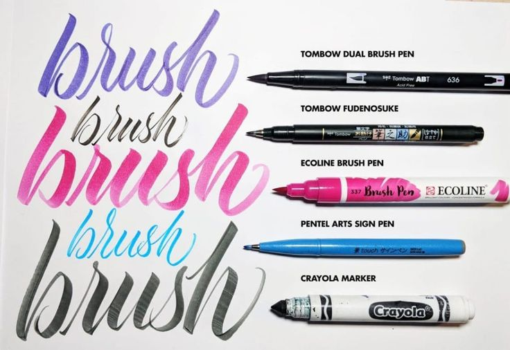
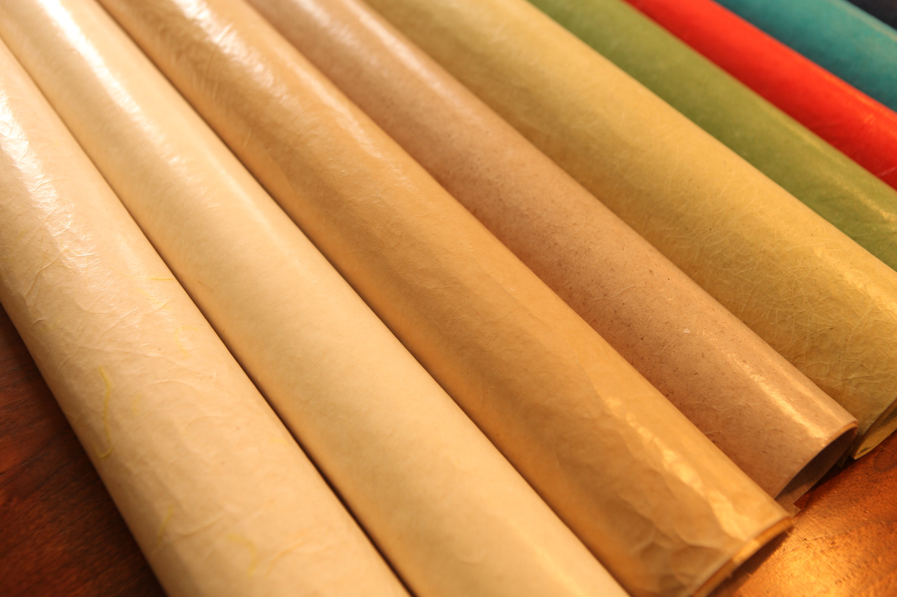

Welcome to Arabic Calligraphy Supplies
At Arabic Calligraphy Supplies, we are passionate about the art of calligraphy and dedicated to providing you with the finest tools and materials to elevate your craft. From specialized pens to premium papers, we ensure authenticity and quality in every product.
Basic Calligraphy Set

Calligraphy Pens: Specialized writing instruments designed to create beautiful, artistic lettering. They feature durable nibs that allow for consistent strokes, making them ideal for various styles of calligraphy.
Types:
- Dip Pens: Traditional and versatile for various scripts.
- Fountain Pens: Convenient with built-in ink reservoirs.
- Brush Pens: Flexible for expressive strokes.
Paper Types

Popular Paper Types:
- Rhodia: Smooth and fountain-pen friendly.
- Tomoe River: Great ink absorption and smooth surface.
- Canson & Fabriano: Premium textured papers for wet ink and sketching.